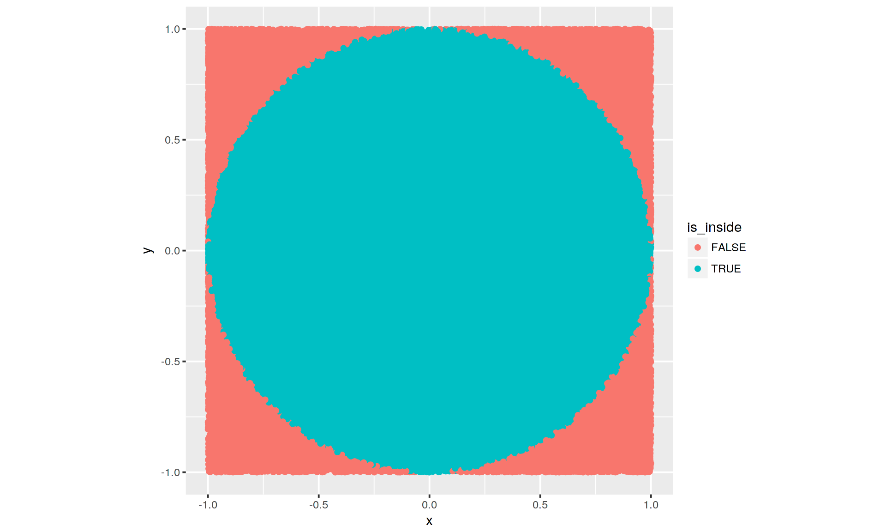
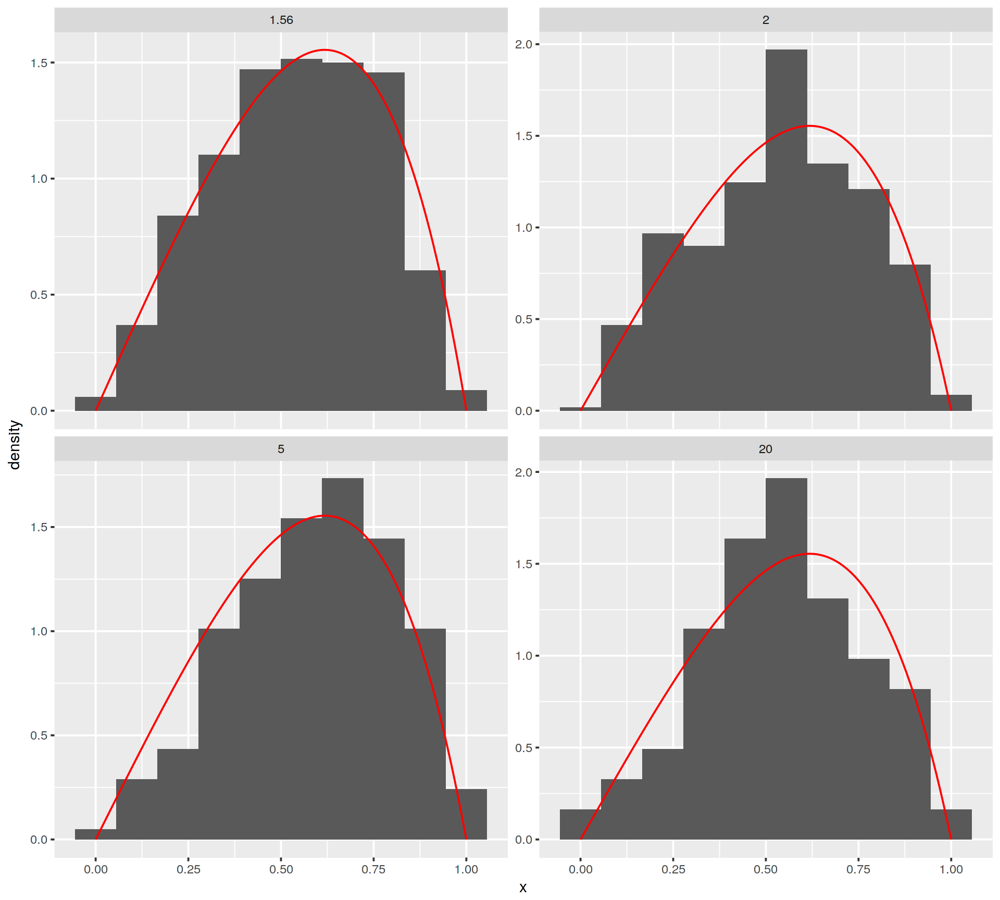
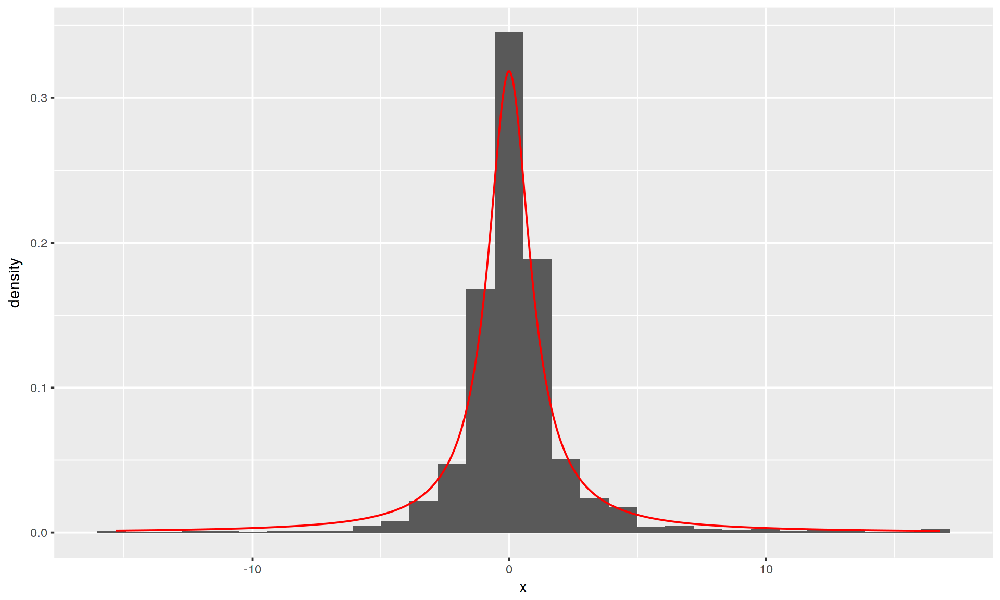
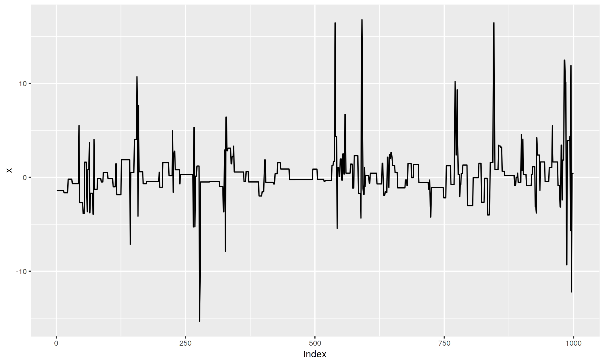

Simulate this experiment by generating many points on the unit square \([-1, 1] \times [-1, 1]\), then counting how many landed in the circle. How good is your approximation if you throw 100 darts? 1,000 darts? 10,000 darts? 100,000 darts?
library(dplyr)
library(ggplot2)
set.seed(1986)
r <- 1 # diameter 1
n <- c(100, 1000, 10000, 100000)
pi_approx <- pi_estimate <- numeric(length = length(n))
for (i in seq_along(n)) {
x <- # randomly generated from a uniform distribution
y <- # randomly generated from a uniform distribution
is_inside <- # whether (x, y) falls in the circle
pi_estimate[i] <- # estimate pi
pi_approx[i] <- # compare pi with pi_estimate
}# n = 100000
pi_df <- data.frame(x = x, y = y, is_inside = is_inside)
ggplot(aes(x = x, y = y, colour = is_inside), data = pi_df) +
geom_point() +
coord_equal()
Suppose it is hard to sample from \(f(x)\). Rejection sampling uses random samples from another density \(g(x)\) we know how to sample from. First find a constant \(c\) such that \(f(x)\leq c g(x)\) for all \(x \in \mathcal{X}\), then follow these steps:
Generate a random sample x with the density \(g(x)\).
Generate a uniformly distributed random sample \(u\) on the interval \(\mathcal{X}\). If \(u \leq \frac{f(x)}{c g(x)}\), then output \(x\); otherwise reject \(x\) and return to step 1.
We will use rejection sampling to generate random samples from the density function \(f(x) = \frac{x (1 - x) e^{x}}{3 - e}\) with \(x \in [0, 1]\) using a uniform proposal, i.e. \(g(x) = 1\) for \(x \in [0, 1]\).
f <- function(x) x * (1 - x) * exp(x) / (3 - exp(1))
x <- seq(0, 1, 0.01)
rdist <- function(c) { # choose c with f(x)<=c for all x
x <- runif(1,0,1) # step 1
u <- runif(1,0,1) # step 2
output <- ifelse(c * u <= f(x), x, -1)
return(output)
}
const <- c(1.56, 2, 5, 20)
rejected_prop <- numeric(length = length(const))
accepted_df <- vector(mode = "list", length = length(const))
for (i in seq_along(const)) {
## fill in the necessary code
}
Let \(q(y|x)\) be an arbitrarly, friendly distribution (i.e. we know how to sample from \(q(y|x)\)), also called the proposal distribution. The M-H algorithm creates a sequence of observations \(X_0, X_1, \dots\), as follows.
Choose \(X_0\) arbitrarily. Suppose we have generated \(X_0, X_1, \dots, X_i\). To generate \(X_{i+1}\), do the following:
\[ r(x, y) = min \left\{1, \frac{f(y) q(x|y)}{f(x) q(y|x)} \right\}\].
\[X_i = \begin{cases} Y & \text{with probability}~ r \\ X_i & \text{with probaiblity}~ 1 - r \end{cases}.\]
Remark 1: A common choice for \(q(y|x)\) is \(\mathcal{N}(x, b^2)\) for some \(b > 0\). In that case, because \(q(y | x) = q(x | y)\), \(r = min \left\{\frac{f(y)}{f(x)}, 1\right\}\).
Remark 2: A simple way to execute (c) is to generate \(U \sim \text{Uniform}(0, 1)\). If \(U < r\), set \(X_{i + 1} = Y\) otherwise \(X_{i+1} = X_i\).
We want to generate samples from the Cauchy distribution that has density
\[ f(x) = \frac{1}{\pi} \frac{1}{1 + x^2} \]
